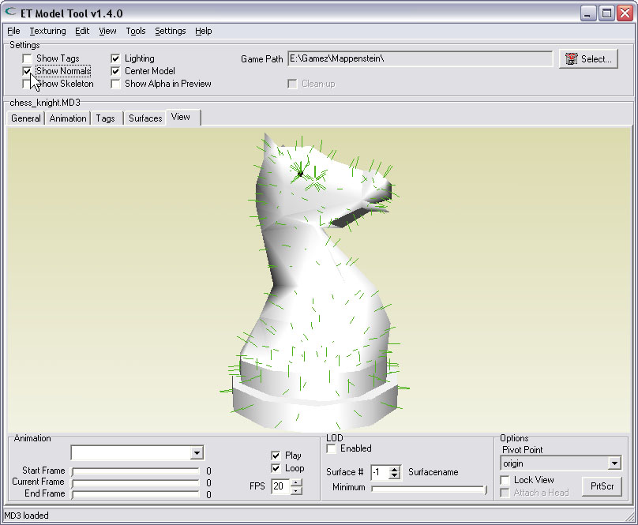
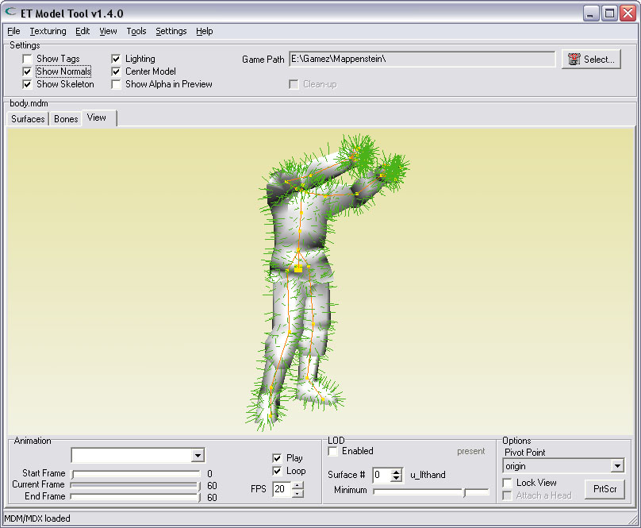

| Showing normals | |
| In 3D, many objects are build-up of triangles. The surface of a triangle is the area inside the 3 edges, marked by the 3 vertices that define a triangle. The surface of one triangle is always flat, and has two sides, the front- & back-side. The front- & back-side of a triangle are very important in 3D-math. It is needed for lighting/shadowing triangles (and many more things). A normal is the indicator of a triangle's direction, and facing away from the triangle. If normals are drawn on screen, they are often attached to the triangles of which they indicate the direction. They look like pointers sticking out of the model, showing the direction of a triangle. They point away from the model. To show face-normals in this tool, simply use the 'Show Normals'-checkbox. The result is much like the r_shownormals command in Wolfenstein-ET. | |
|  | |
|  | |
| Note: I try to keep this explanation simple. To be more precise: In 3D-math, most calculations involving normals are performed on planes, and not on faces. A triangle is a face; It is a polygon with edges between several of its vertices. It has an outline, a shape with a certain size and area. A plane has no edges nor a size. A plane streches into infinity. It is just a flat surface with a direction, positioned somewhere in 3D-space. The mathmetical equation of a plane however, is very simple. That is why planes are used in 3D-math instead of faces. The complete idea behind BSP (Binary Space Partitioning) evolves on planes; Checking if something is in-front or behind a plane,.. checking for collisions.. It is a good thing that computers are fast in performing calculations. If You realize howmany has to be calculated for just 1 frame (of many FPS), most people would think wT*! | |